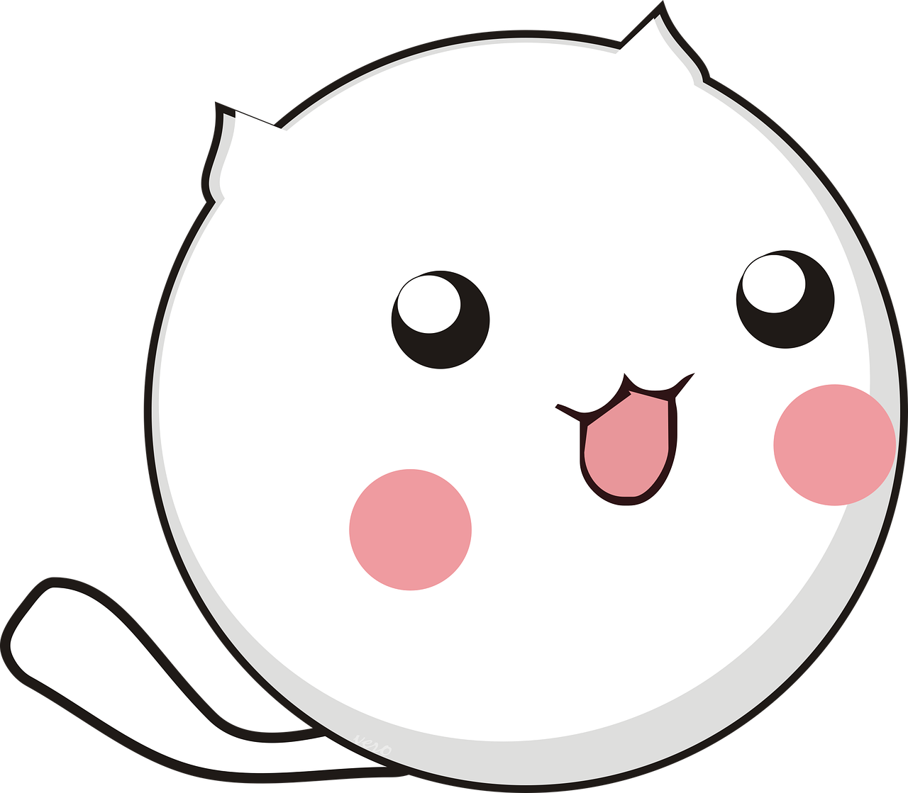

Meowth is a Pokémon species in Nintendo and Game Freak's Pokémon franchise. Created by Ken Sugimori, Meowth
first appeared in the video games Pokémon Red and Blue and subsequent entries in the franchise.
Es sammelt mit Vorliebe glänzende Gegenstände. Ist es gut gelaunt, lässt es seinen Trainer einen Blick auf seine
Sammlung werfen.
 Die meisten Katzen lieben den
Geruch von Käse und fressen das Milchprodukt gern, wenn Sie es Ihnen anbieten. Doch ist Käse für die Vierbeiner
gesund? Nicht wirklich. Eine Samtpfote sollte daher nur wenig Käse essen, ein kleiner Happen zwischendurch ist
aber normalerweise nicht schädlich.
Die meisten Katzen lieben den
Geruch von Käse und fressen das Milchprodukt gern, wenn Sie es Ihnen anbieten. Doch ist Käse für die Vierbeiner
gesund? Nicht wirklich. Eine Samtpfote sollte daher nur wenig Käse essen, ein kleiner Happen zwischendurch ist
aber normalerweise nicht schädlich.